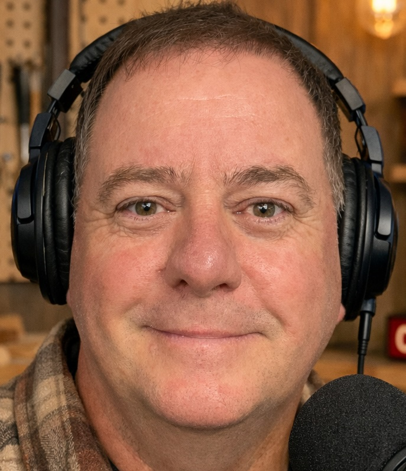

Two blokes from Sydney who love timber, hate pretension, and reckon woodworking deserves a proper podcast.
Hands-on, straight-talking, and always good for a laugh. Plummo brings practical woodworking knowledge and zero ego to every episode.
Plummo is the hands-on force behind Plummo's Timber, bringing a mix of craftsmanship, humour, and straight-talk woodworking to the bench. He's built a reputation for keeping things practical, honest, and approachable — whether he's breaking down a project, talking tools, or having a laugh at his own expense.
Based in Sydney, Plummo's passion for timber is matched by his belief that woodworking should be enjoyable, not intimidating. Through Plummo's Timber he shares real-world experience, hard-earned lessons, and a genuine love for the craft — connecting with makers of all levels who appreciate skill, mateship, and a good yarn along the way.
On the podcast, Plummo is your go-to for practical how-to conversation, tool reviews, and the kind of no-nonsense advice that only comes from someone who's making every mistake so you don't have to.

Creative, witty, and laid-back to the core. Hazy brings the aesthetic eye and the everyman's perspective — proving you don't need a flash workshop to make quality work.
Hazy is the creative engine behind Hazys Wood, known for blending solid craftsmanship with sharp wit and a laid-back Aussie vibe. Working out of Sydney, Hazy has built a reputation for practical builds, honest tool talk, and the kind of no-nonsense advice that only comes from time spent in the shed.
With a passion for timber and a knack for making woodworking accessible, Hazy champions the idea that you don't need a flash workshop to create quality pieces — just the right mindset, a bit of patience, and a willingness to learn from your mistakes.
Whether he's refining techniques, testing tools, or sharing a laugh along the way, Hazy represents the everyday maker who's always chasing the next improvement while keeping the craft fun and grounded. On the podcast he's the one likely to go off on a fascinating tangent — and somehow always make it relevant.
Are you a woodworker, sawmiller, tool maker, health professional, or someone with a cracking story from the timber world? Hazy and Plummo are always keen to have a yarn.
Apply to Be a Guest →